Nginx-001详细介绍
前言
作为一名前端开发人员，你是不是经常碰到领导让你上服务器去修改 Nginx 配置，然而你会以“我是前端，这个我不会”为理由搪塞过去呢！今天就让我们一起告别这种尴尬，向“真正”的程序员迈进！！！
Nginx 概述
Nginx 是开源、高性能、高可靠的 Web 和反向代理服务器，而且支持热部署，几乎可以做到 7 * 24 小时不间断运行，即使运行几个月也不需要重新启动，还能在不间断服务的情况下对软件版本进行热更新。性能是 Nginx 最重要的考量，其占用内存少、并发能力强、能支持高达 5w 个并发连接数，最重要的是， Nginx 是免费的并可以商业化，配置使用也比较简单。
Nginx 特点
- 并发、高性能；
- 块化架构使得它的扩展性非常好；
- 步非阻塞的事件驱动模型这点和 Node.js 相似；
- 对于其它服务器来说它可以连续几个月甚至更长而不需要重启服务器使得它具有高可靠性；
- 部署、平滑升级；
- 全开源，生态繁荣；
Nginx 作用
Nginx 的最重要的几个使用场景：
- 静态资源服务，通过本地文件系统提供服务；
- 反向代理服务，延伸出包括缓存、负载均衡等,四层和七层都可以做；
- API 服务， OpenResty ；
对于前端来说 Node.js 并不陌生， Nginx 和 Node.js 的很多理念类似， HTTP 服务器、事件驱动、异步非阻塞等，且 Nginx 的大部分功能使用 Node.js 也可以实现，但 Nginx 和 Node.js 并不冲突，都有自己擅长的领域。 Nginx 擅长于底层服务器端资源的处理（静态资源处理转发、反向代理，负载均衡等）， Node.js 更擅长上层具体业务逻辑的处理，两者可以完美组合。
用一张图表示： 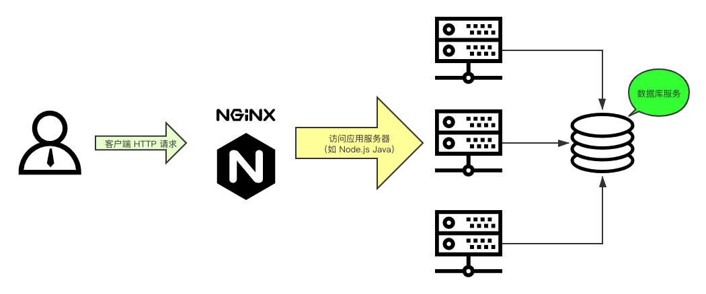
Nginx 安装
本文演示的是 Linux centOS 7.x 的操作系统上安装 Nginx ，至于在其它操作系统上进行安装可以网上自行搜索，都非常简单的。
使用 yum 安装 Nginx ：
|
|
安装完成后，通过 rpm \-ql nginx 命令查看 Nginx 的安装信息：
|
|
主要关注的文件夹有两个：
- /etc/nginx/conf.d/ 是子配置项存放处， /etc/nginx/nginx.conf 主配置文件会默认把这个文件夹中所有子配置项都引入；
- /usr/share/nginx/html/ 静态文件都放在这个文件夹，也可以根据你自己的习惯放在其他地方；
Nginx 常用命令
systemctl 系统命令：
|
|
Nginx 应用程序命令：
|
|
Nginx 核心配置
配置文件结构
Nginx 的典型配置示例：
|
|
- main 全局配置，对全局生效；
- events 配置影响 Nginx 服务器与用户的网络连接；
- http 配置代理，缓存，日志定义等绝大多数功能和第三方模块的配置；
- server 配置虚拟主机的相关参数，一个 http 块中可以有多个 server 块；
- location 用于配置匹配的 uri ；
- upstream 配置后端服务器具体地址，负载均衡配置不可或缺的部分； 用一张图清晰的展示它的层级结构： 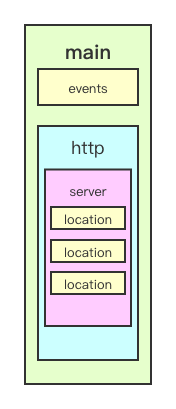
配置文件 main 段核心参数
user
指定运行 Nginx 的 woker 子进程的属主和属组，其中组可以不指定。
|
|
pid
指定运行 Nginx master 主进程的 pid 文件存放路径。
|
|
worker_rlimit_nofile_number
指定 worker 子进程可以打开的最大文件句柄数。
|
|
worker_rlimit_core
指定 worker 子进程异常终止后的 core 文件，用于记录分析问题。
|
|
worker_processes_number
指定 Nginx 启动的 worker 子进程数量。
|
|
worker_cpu_affinity
将每个 worker 子进程与我们的 cpu 物理核心绑定。
|
|
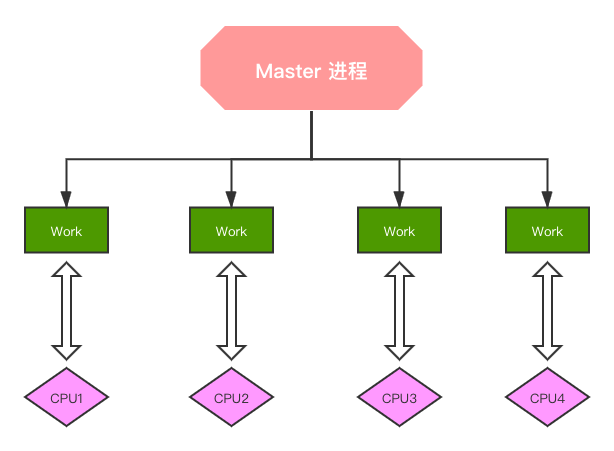
将每个 worker 子进程与特定 CPU 物理核心绑定，优势在于，避免同一个 worker 子进程在不同的 CPU 核心上切换，缓存失效，降低性能。但其并不能真正的避免进程切换。
worker_priority
指定 worker 子进程的 nice 值，以调整运行 Nginx 的优先级，通常设定为负值，以优先调用 Nginx 。
|
|
Linux 默认进程的优先级值是120，值越小越优先； nice 定范围为 -20 到 +19 。
[备注] 应用的默认优先级值是120加上 nice 值等于它最终的值，这个值越小，优先级越高。
worker_shutdown_timeout
指定 worker 子进程优雅退出时的超时时间。
|
|
timer_resolution
worker 子进程内部使用的计时器精度，调整时间间隔越大，系统调用越少，有利于性能提升；反之，系统调用越多，性能下降。
|
|
在 Linux 系统中，用户需要获取计时器时需要向操作系统内核发送请求，有请求就必然会有开销，因此这个间隔越大开销就越小。
daemon
指定 Nginx 的运行方式，前台还是后台，前台用于调试，后台用于生产。
|
|
配置文件 events 段核心参数
use
Nginx 使用何种事件驱动模型。
|
|
worker_connections
worker 子进程能够处理的最大并发连接数。
|
|
accept_mutex
是否打开负载均衡互斥锁。
|
|
server_name 指令
指定虚拟主机域名。
server_name name1 name2 name3
示例：
|
|
- 精确匹配： server_name www.nginx.com ;
- 左侧通配： server_name *.nginx.com ;
- 右侧统配： server_name www.nginx.* ;
- 正则匹配： server_name ~^www.nginx.*$ ;
匹配优先级：精确匹配 > 左侧通配符匹配 > 右侧通配符匹配 > 正则表达式匹配
server_name 配置实例：
1、配置本地 DNS 解析 vim /etc/hosts （ macOS 系统）
|
|
[注意] 这里使用的是虚拟域名进行测试，因此需要配置本地 DNS 解析，如果使用阿里云上购买的域名，则需要在阿里云上设置好域名解析。
2、配置阿里云 Nginx ，vim /etc/nginx/nginx.conf
|
|
3、访问分析
- 当访问 www.nginx-test.com 时，都可以被匹配上，因此选择优先级最高的“完全匹配”；
- 当访问 mail.nginx-test.com 时，会进行“左匹配”；
- 当访问 www.nginx-test.org 时，会进行“右匹配”；
- 当访问 doc.nginx-test.com 时，会进行“左匹配”；
- 当访问 www.nginx-test.cn 时，会进行“右匹配”；
- 当访问 fe.nginx-test.club 时，会进行“正则匹配”；
root
指定静态资源目录位置，它可以写在 http 、 server 、 location 等配置中。
|
|
[注意] root 会将定义路径与 URI 叠加， alias 则只取定义路径。
alias
它也是指定静态资源目录位置，它只能写在 location 中。
|
|
[注意] 使用 alias 末尾一定要添加 / ，并且它只能位于 location 中。
location
配置路径。
|
|
匹配规则：
- = 精确匹配；
- ~ 正则匹配，区分大小写；
- ~* 正则匹配，不区分大小写；
- ^~ 匹配到即停止搜索；
匹配优先级： = > ^~ > ~ > ~* > 不带任何字符。 实例：
|
|
location 中的反斜线
|
|
- 不带 / 当访问 www.nginx-test.com/test 时， Nginx 先找是否有 test 目录，如果有则找 test 目录下的 index.html ；如果没有 test 目录， nginx 则会找是否有 test 文件。
- 带 / 当访问 www.nginx-test.com/test 时， Nginx 先找是否有 test 目录，如果有则找 test 目录下的 index.html ，如果没有它也不会去找是否存在 test 文件。
return
停止处理请求，直接返回响应码或重定向到其他 URL ；
执行 return 指令后， location 中后续指令将不会被执行。
|
|
rewrite
根据指定正则表达式匹配规则，重写 URL 。
|
|
flag 可选值的含义：
- last 重写后的 URL 发起新请求，再次进入 server 段，重试 location 的中的匹配；
- break 直接使用重写后的 URL ，不再匹配其它 location 中语句；
- redirect 返回302临时重定向；
- permanent 返回301永久重定向；
|
|
按照这个配置我们来分析：
- 当访问 fe.lion.club/search 时，会自动帮我们重定向到 https://www.baidu.com。
- 当访问 fe.lion.club/images/1.jpg 时，第一步重写 URL 为 fe.lion.club/pics/1.jpg ，找到 pics 的 location ，继续重写 URL 为 fe.lion.club/photos/1.jpg ，找到 /photos 的 location 后，去 html/photos 目录下寻找 1.jpg 静态资源。
if 指令
|
|
condition 判断条件：
- $variable 仅为变量时，值为空或以0开头字符串都会被当做 false 处理；
- = 或 != 相等或不等；
- ~ 正则匹配；
- ! ~ 非正则匹配；
- ~* 正则匹配，不区分大小写；
- -f 或 ! -f 检测文件存在或不存在；
- -d 或 ! -d 检测目录存在或不存在；
- -e 或 ! -e 检测文件、目录、符号链接等存在或不存在；
- -x 或 ! -x 检测文件可以执行或不可执行；
实例：
|
|
当访问 localhost:8080/images/ 时，会进入 if 判断里面执行 rewrite 命令。
autoindex
用户请求以 / 结尾时，列出目录结构，可以用于快速搭建静态资源下载网站。
autoindex.conf 配置信息：
|
|
当访问 fe.lion.com/download/ 时，会把服务器 /opt/source/download/ 路径下的文件展示出来，如下图所示： 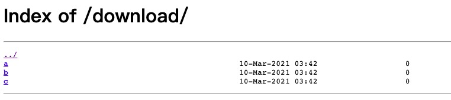
变量
Nginx 提供给使用者的变量非常多，但是终究是一个完整的请求过程所产生数据， Nginx 将这些数据以变量的形式提供给使用者。
下面列举些项目中常用的变量：
| 变量名 | 含义 |
|---|---|
| remote_addr | 客户端IP地址 |
| remote_port | 客户端端口 |
| server_addr | 服务端IP地址 |
| server_port | 服务端端口 |
| server_protocol | 服务端协议 |
| binary_remote_addr | 二进制格式的客户端IP地址 |
| connection | TCP连接的序号，递增 |
| connection_request | TCP连接当前的请求数量 |
| uri | 请求的URL，不包含参数 |
| request_uri | 请求的URL，包含参数 |
| scheme | 协议名,http或https |
| request_method | 请求方法 |
| request_length | 全部请求的长度，包含请求行、请求头、请求体 |
| args | 全部参数字符串 |
| arg_参数名 | 获取特定参数值 |
| is_args | URL中是否有参数，有的话返回?，否则返回空 |
| query_string | 与args相同 |
| host | 请求信息中的Host,如果请求中没有Host行，则在请求头中找，最后使用nginx中设置的server_name |
| http_user_agent | 用户浏览器 |
| http_referer | 从哪些链接过来的请求 |
| http_via | 每经过一层代理服务器，都会添加相应的信息 |
| http_cookie | 获取用户cookie |
| request_time | 处理请求已消耗的时间 |
| https | 是否开启了https,是则返回on,否则返回空 |
| request_filename | 磁盘文件系统待访问文件的完整路径 |
| document_root | 由URI和root/alias规则生成的文件夹路径 |
| limit_rate | 返回响应时的速度上限值 |
实例演示 var.conf:
|
|
当我们访问 http://var.lion-test.club:8081/test?pid=121414&cid=sadasd 时，由于 Nginx 中写了 return 方法，因此 chrome 浏览器会默认为我们下载一个文件，下面展示的就是下载的文件内容：
remote_addr: 27.16.220.84
remote_port: 56838
server_addr: 172.17.0.2
server_port: 8081
server_protocol: HTTP/1.1
binary_remote_addr: 茉
connection: 126
uri: /test/
request_uri: /test/?pid=121414&cid=sadasd
scheme: http
request_method: GET
request_length: 518
args: pid=121414&cid=sadasd
arg_pid: 121414
is_args: ?
query_string: pid=121414&cid=sadasd
host: var.lion-test.club
http_user_agent: Mozilla/5.0 (Macintosh; Intel Mac OS X 10_14_0) AppleWebKit/537.36 (KHTML, like Gecko) Chrome/88.0.4324.182 Safari/537.36
http_referer:
http_via:
request_time: 0.000
https:
request_filename: /usr/share/nginx/html/test/
document_root: /usr/share/nginx/html
Nginx 的配置还有非常多，以上只是罗列了一些常用的配置，在实际项目中还是要学会查阅文档。
Nginx 应用核心概念
代理是在服务器和客户端之间假设的一层服务器，代理将接收客户端的请求并将它转发给服务器，然后将服务端的响应转发给客户端。
不管是正向代理还是反向代理，实现的都是上面的功能。 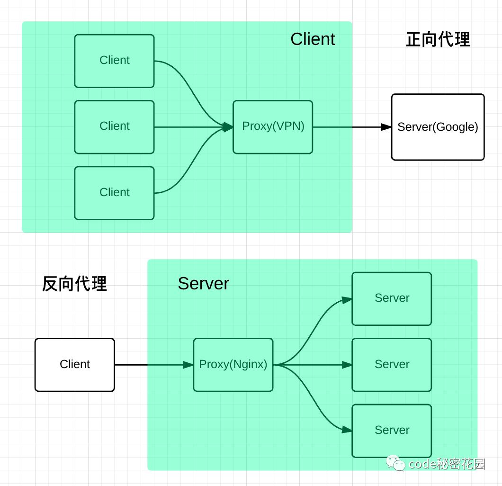
正向代理
正向代理，意思是一个位于客户端和原始服务器(origin server)之间的服务器，为了从原始服务器取得内容，客户端向代理发送一个请求并指定目标(原始服务器)，然后代理向原始服务器转交请求并将获得的内容返回给客户端。
正向代理是为我们服务的，即为客户端服务的，客户端可以根据正向代理访问到它本身无法访问到的服务器资源。
正向代理对我们是透明的，对服务端是非透明的，即服务端并不知道自己收到的是来自代理的访问还是来自真实客户端的访问。
反向代理
反向代理*（Reverse Proxy）方式是指以代理服务器来接受internet上的连接请求，然后将请求转发给内部网络上的服务器，并将从服务器上得到的结果返回给internet上请求连接的客户端，此时代理服务器对外就表现为一个反向代理服务器。
反向代理是为服务端服务的，反向代理可以帮助服务器接收来自客户端的请求，帮助服务器做请求转发，负载均衡等。
反向代理对服务端是透明的，对我们是非透明的，即我们并不知道自己访问的是代理服务器，而服务器知道反向代理在为他服务。
反向代理的优势：
- 隐藏真实服务器；
- 负载均衡便于横向扩充后端动态服务；
- 动静分离，提升系统健壮性；
那么“动静分离”是什么？负载均衡又是什么？
动静分离
动静分离是指在 web 服务器架构中，将静态页面与动态页面或者静态内容接口和动态内容接口分开不同系统访问的架构设计方法，进而提示整个服务的访问性和可维护性。 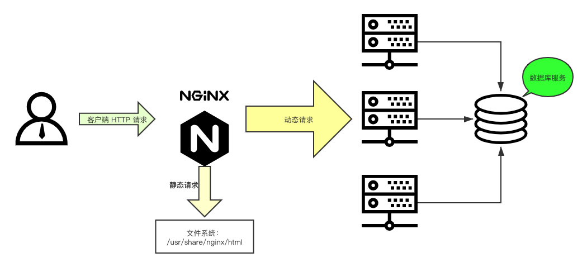
一般来说，都需要将动态资源和静态资源分开，由于 Nginx 的高并发和静态资源缓存等特性，经常将静态资源部署在 Nginx 上。如果请求的是静态资源，直接到静态资源目录获取资源，如果是动态资源的请求，则利用反向代理的原理，把请求转发给对应后台应用去处理，从而实现动静分离。
使用前后端分离后，可以很大程度提升静态资源的访问速度，即使动态服务不可用，静态资源的访问也不会受到影响。
负载均衡
一般情况下，客户端发送多个请求到服务器，服务器处理请求，其中一部分可能要操作一些资源比如数据库、静态资源等，服务器处理完毕后，再将结果返回给客户端。4层和7层负载均衡都能实现。
这种模式对于早期的系统来说，功能要求不复杂，且并发请求相对较少的情况下还能胜任，成本也低。随着信息数量不断增长，访问量和数据量飞速增长，以及系统业务复杂度持续增加，这种做法已无法满足要求，并发量特别大时，服务器容易崩。
很明显这是由于服务器性能的瓶颈造成的问题，除了堆机器之外，最重要的做法就是负载均衡。
请求爆发式增长的情况下，单个机器性能再强劲也无法满足要求了，这个时候集群的概念产生了，单个服务器解决不了的问题，可以使用多个服务器，然后将请求分发到各个服务器上，将负载分发到不同的服务器，这就是负载均衡，核心是「分摊压力」。 Nginx 实现负载均衡，一般来说指的是将请求转发给服务器集群。
举个具体的例子，晚高峰乘坐地铁的时候，入站口经常会有地铁工作人员大喇叭“请走 B 口， B 口人少车空….”，这个工作人员的作用就是负载均衡。 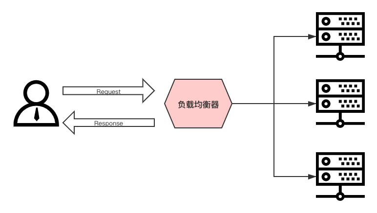
Nginx 实现负载均衡的策略：
- 轮询策略：默认情况下采用的策略，将所有客户端请求轮询分配给服务端。这种策略是可以正常工作的，但是如果其中某一台服务器压力太大，出现延迟，会影响所有分配在这台服务器下的用户。
- 最小连接数策略：将请求优先分配给压力较小的服务器，它可以平衡每个队列的长度，并避免向压力大的服务器添加更多的请求。
- 最快响应时间策略：优先分配给响应时间最短的服务器。
- 客户端 ip 绑定策略：来自同一个 ip 的请求永远只分配一台服务器，有效解决了动态网页存在的 session 共享问题。
Nginx 实战配置
在配置反向代理和负载均衡等等功能之前，有两个核心模块是我们必须要掌握的，这两个模块应该说是 Nginx 应用配置中的核心，它们分别是： upstream 、proxy_pass 。
upstream
用于定义上游服务器（指的就是后台提供的应用服务器）的相关信息。 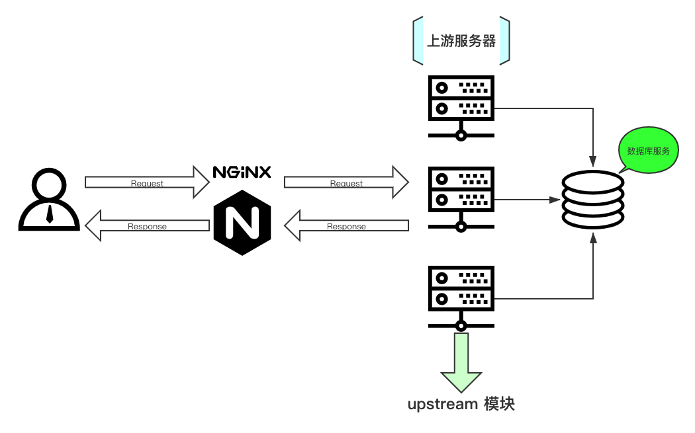
|
|
在 upstream 内可使用的指令：
- server 定义上游服务器地址；
- zone 定义共享内存，用于跨 worker 子进程；
- keepalive 对上游服务启用长连接；
- keepalive_requests 一个长连接最多请求 HTTP 的个数；
- keepalive_timeout 空闲情形下，一个长连接的超时时长；
- hash 哈希负载均衡算法；
- ip_hash 依据 IP 进行哈希计算的负载均衡算法；
- least_conn 最少连接数负载均衡算法；
- least_time 最短响应时间负载均衡算法；
- random 随机负载均衡算法；
server
定义上游服务器地址。
|
|
parameters 可选值：
- weight=number 权重值，默认为1；
- max_conns=number 上游服务器的最大并发连接数；
- fail_timeout=time 服务器不可用的判定时间；
- max_fails=numer 服务器不可用的检查次数；
- backup 备份服务器，仅当其他服务器都不可用时才会启用；
- down 标记服务器长期不可用，离线维护；
keepalive
限制每个 worker 子进程与上游服务器空闲长连接的最大数量。
|
|
keepalive_requests
单个长连接可以处理的最多 HTTP 请求个数。
|
|
keepalive_timeout
空闲长连接的最长保持时间。
|
|
配置实例
|
|
proxy_pass
用于配置代理服务器。
|
|
URL 参数原则
- URL 必须以 http 或 https 开头；
- URL 中可以携带变量；
- URL 中是否带 URI ，会直接影响发往上游请求的 URL ；
接下来让我们来看看两种常见的 URL 用法：
- proxy_pass http://192.168.100.33:8081
- proxy_pass http://192.168.100.33:8081/
这两种用法的区别就是带 / 和不带 / ，在配置代理时它们的区别可大了：
- 不带 / 意味着 Nginx 不会修改用户 URL ，而是直接透传给上游的应用服务器；
- 带 / 意味着 Nginx 会修改用户 URL ，修改方法是将 location 后的 URL 从用户 URL 中删除；
不带 / 的用法：
|
|
分析：
- 用户请求 URL ： /bbs/abc/test.html
- 请求到达 Nginx 的 URL ： /bbs/abc/test.html
- 请求到达上游应用服务器的 URL ： /bbs/abc/test.html
带 / 的用法：
|
|
分析：
- 用户请求 URL ： /bbs/abc/test.html
- 请求到达 Nginx 的 URL ： /bbs/abc/test.html
- 请求到达上游应用服务器的 URL ： /abc/test.html
并没有拼接上 /bbs ，这点和 root 与 alias 之间的区别是保持一致的。
配置反向代理
这里为了演示更加接近实际，作者准备了两台云服务器，它们的公网 IP 分别是： 121.42.11.34 与 121.5.180.193 。
我们把 121.42.11.34 服务器作为上游服务器，做如下配置：
|
|
配置完成后重启 Nginx 服务器 nginx -s reload 。
把 121.5.180.193 服务器作为代理服务器，做如下配置：
|
|
本地机器要访问 proxy.lion.club 域名，因此需要配置本地 hosts ，通过命令：vim /etc/hosts 进入配置文件，添加如下内容：
|
|
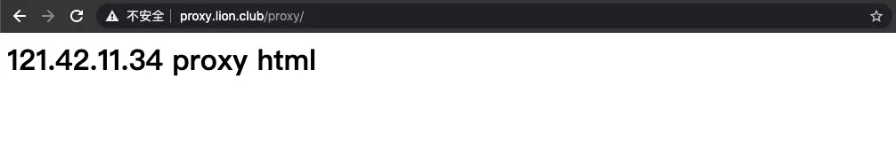
分析：
- 当访问 proxy.lion.club/proxy 时通过 upstream 的配置找到 121.42.11.34:8080 ；
- 因此访问地址变为 http://121.42.11.34:8080/proxy ；
- 连接到 121.42.11.34 服务器，找到 8080 端口提供的 server ；
- 通过 server 找到 /usr/share/nginx/html/proxy/index.html 资源，最终展示出来。
配置负载均衡
配置负载均衡主要是要使用 upstream 指令。
我们把 121.42.11.34 服务器作为上游服务器，做如下配置（ /etc/nginx/conf.d/balance.conf ）：
|
|
配置完成后：
- nginx -t 检测配置是否正确；
- nginx -s reload 重启 Nginx 服务器；
- 执行 ss -nlt 命令查看端口是否被占用，从而判断 Nginx 服务是否正确启动。
把 121.5.180.193 服务器作为代理服务器，做如下配置（ /etc/nginx/conf.d/balance.conf ）：
|
|
配置完成后重启 Nginx 服务器。并且在需要访问的客户端配置好 ip 和域名的映射关系。
|
|
在客户端机器执行 curl http://balance.lion.club/balance/ 命令：
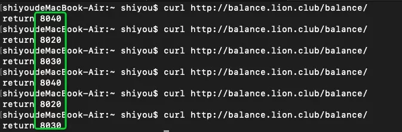
不难看出，负载均衡的配置已经生效了，每次给我们分发的上游服务器都不一样。就是通过简单的轮询策略进行上游服务器分发。
接下来，我们再来了解下 Nginx 的其它分发策略。
hash 算法
通过制定关键字作为 hash key ，基于 hash 算法映射到特定的上游服务器中。关键字可以包含有变量、字符串。
|
|
hash $request_uri 表示使用 request_uri 变量作为 hash 的 key 值，只要访问的 URI 保持不变，就会一直分发给同一台服务器。
ip_hash
根据客户端的请求 ip 进行判断，只要 ip 地址不变就永远分配到同一台主机。它可以有效解决后台服务器 session 保持的问题。
|
|
最少连接数算法
各个 worker 子进程通过读取共享内存的数据，来获取后端服务器的信息。来挑选一台当前已建立连接数最少的服务器进行分配请求。
|
|
示例：
|
|
最后你会发现，负载均衡的配置其实一点都不复杂。
配置缓存
缓存可以非常有效的提升性能，因此不论是客户端（浏览器），还是代理服务器（ Nginx ），乃至上游服务器都多少会涉及到缓存。可见缓存在每个环节都是非常重要的。下面让我们来学习 Nginx 中如何设置缓存策略。
proxy_cache
存储一些之前被访问过、而且可能将要被再次访问的资源，使用户可以直接从代理服务器获得，从而减少上游服务器的压力，加快整个访问速度。
|
|
proxy_cache_path
设置缓存文件的存放路径。
|
|
参数含义：
- path 缓存文件的存放路径；
- level path 的目录层级；
- keys_zone 设置共享内存；
- inactive 在指定时间内没有被访问，缓存会被清理，默认10分钟；
proxy_cache_key
设置缓存文件的 key 。
|
|
proxy_cache_valid
配置什么状态码可以被缓存，以及缓存时长。
|
|
proxy_no_cache
定义相应保存到缓存的条件，如果字符串参数的至少一个值不为空且不等于“ 0”，则将不保存该响应到缓存。
|
|
proxy_cache_bypass
定义条件，在该条件下将不会从缓存中获取响应。
|
|
upstream_cache_status 变量
它存储了缓存是否命中的信息，会设置在响应头信息中，在调试中非常有用。
|
|
配置实例
我们把 121.42.11.34 服务器作为上游服务器，做如下配置（ /etc/nginx/conf.d/cache.conf ）：
|
|
把 121.5.180.193 服务器作为代理服务器，做如下配置（ /etc/nginx/conf.d/cache.conf ）：
|
|
缓存就是这样配置，我们可以在 /etc/nginx/cache_temp 路径下找到相应的缓存文件。
对于一些实时性要求非常高的页面或数据来说，就不应该去设置缓存，下面来看看如何配置不缓存的内容。
|
|
HTTPS
在学习如何配置 HTTPS 之前，我们先来简单回顾下 HTTPS 的工作流程是怎么样的？它是如何进行加密保证安全的？
HTTPS 工作流程
- 客户端（浏览器）访问 https://www.baidu.com 百度网站；
- 百度服务器返回 HTTPS 使用的 CA 证书；
- 浏览器验证 CA 证书是否为合法证书；
- 验证通过，证书合法，生成一串随机数并使用公钥（证书中提供的）进行加密；
- 发送公钥加密后的随机数给百度服务器；
- 百度服务器拿到密文，通过私钥进行解密，获取到随机数（公钥加密，私钥解密，反之也可以）；
- 百度服务器把要发送给浏览器的内容，使用随机数进行加密后传输给浏览器；
- 此时浏览器可以使用随机数进行解密，获取到服务器的真实传输内容；
这就是 HTTPS 的基本运作原理，使用对称加密和非对称机密配合使用，保证传输内容的安全性。
关于HTTPS更多知识，可以查看作者的另外一篇文章《学习 HTTP 协议》。
配置证书
下载证书的压缩文件，里面有个 Nginx 文件夹，把 xxx.crt 和 xxx.key 文件拷贝到服务器目录，再进行如下配置：
|
|
如此配置后就能正常访问 HTTPS 版的网站了。
配置跨域 CORS
先简单回顾下跨域究竟是怎么回事。
跨域的定义
同源策略限制了从同一个源加载的文档或脚本如何与来自另一个源的资源进行交互。这是一个用于隔离潜在恶意文件的重要安全机制。通常不允许不同源间的读操作。
同源的定义
如果两个页面的协议，端口（如果有指定）和域名都相同，则两个页面具有相同的源。
下面给出了与 URL http://store.company.com/dir/page.html 的源进行对比的示例:
|
|
不同源会有如下限制：
- Web 数据层面，同源策略限制了不同源的站点读取当前站点的 Cookie 、 IndexDB 、 LocalStorage 等数据。
- DOM 层面，同源策略限制了来自不同源的 JavaScript 脚本对当前 DOM 对象读和写的操作。
- 网络层面，同源策略限制了通过 XMLHttpRequest 等方式将站点的数据发送给不同源的站点。
Nginx 解决跨域的原理
例如：
- 前端 server 的域名为： fe.server.com
- 后端服务的域名为： dev.server.com
现在我在 fe.server.com 对 dev.server.com 发起请求一定会出现跨域。
现在我们只需要启动一个 Nginx 服务器，将 server_name 设置为 fe.server.com 然后设置相应的 location 以拦截前端需要跨域的请求，最后将请求代理回 dev.server.com 。如下面的配置：
|
|
这样可以完美绕过浏览器的同源策略： fe.server.com 访问 Nginx 的 fe.server.com 属于同源访问，而 Nginx 对服务端转发的请求不会触发浏览器的同源策略。
配置开启 gzip 压缩
GZIP 是规定的三种标准 HTTP 压缩格式之一。目前绝大多数的网站都在使用 GZIP 传输 HTML 、CSS 、 JavaScript 等资源文件。
对于文本文件， GZiP 的效果非常明显，开启后传输所需流量大约会降至 1/4~1/3 。
并不是每个浏览器都支持 gzip 的，如何知道客户端是否支持 gzip 呢，请求头中的 Accept-Encoding 来标识对压缩的支持。
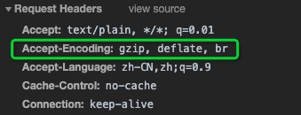
启用 gzip 同时需要客户端和服务端的支持，如果客户端支持 gzip 的解析，那么只要服务端能够返回 gzip 的文件就可以启用 gzip 了,我们可以通过 Nginx 的配置来让服务端支持 gzip 。下面的 respone 中 content-encoding:gzip ，指服务端开启了 gzip 的压缩方式。
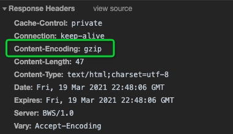
在 /etc/nginx/conf.d/ 文件夹中新建配置文件 gzip.conf ：
|
|
其实也可以通过前端构建工具例如 webpack 、rollup 等在打生产包时就做好 Gzip 压缩，然后放到 Nginx 服务器中，这样可以减少服务器的开销，加快访问速度。
关于 Nginx 的实际应用就学习到这里，相信通过掌握了 Nginx 核心配置以及实战配置，之后再遇到什么需求，我们也能轻松应对。接下来，让我们再深入一点学习下 Nginx 的架构。
Nginx 架构
进程结构
多进程结构 Nginx 的进程模型图： 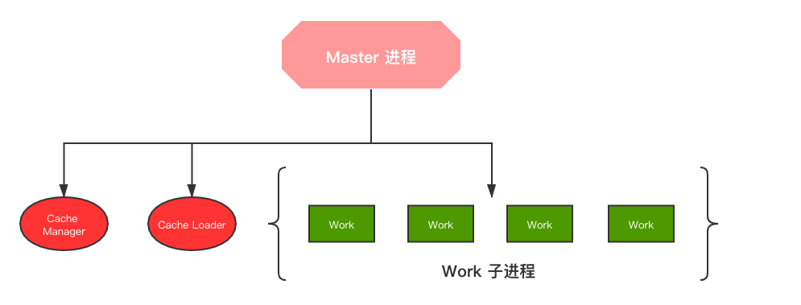
多进程中的 Nginx 进程架构如下图所示，会有一个父进程（ Master Process ），它会有很多子进程（ Child Processes ）。
- Master Process 用来管理子进程的，其本身并不真正处理用户请求。
- 某个子进程 down 掉的话，它会向 Master 进程发送一条消息，表明自己不可用了，此时 Master 进程会去新起一个子进程。
- 某个配置文件被修改了 Master 进程会去通知 work 进程获取新的配置信息，这也就是我们所说的热部署。
- 子进程间是通过共享内存的方式进行通信的。
nginx是以多进程的方式来工作的。
nginx在启动后，会有一个master进程和多个worker进程。
master进程主要用来管理worker进程： 包含：
- 接收来自外界的信号，向各worker进程发送信号。
- 监控worker进程的运行状态，当worker进程退出后(异常情况下)，会自动重新启动新的worker进程。
而基本的网络事件，则是放在worker进程中来处理了。
worker进程之间是对等的，一个请求，只可能在一个worker进程中处理，一个worker进程，不可能处理其它进程的请求。
worker进程的个数，一般会设置与机器cpu核数一致。当我们提供80端口的http服务时，一个连接请求过来，每个进程都有可能处理这个连接。
处理过程如下：
-
master（master进程会先建立好需要listen的socket）—fork生成子进程workers，继承socket（此时workers子进程们都继承了父进程master的所有属性，当然也包括已经
-
建立好的socket，当然不是同一个socket，只是每个进程的这个socket会监控在同一个ip地址与端口，这个在网络协议里面是允许的）——当一个连接进入，产生惊群现象。
一般来说，当一个连接进来后，所有在accept在这个socket上面的进程，都会收到通知，而只有一个进程可以accept这个连接，其它的则accept失败。
惊群现象：指一个fd的事件被触发后，等候这个fd的所有线程/进程都被唤醒。虽然都被唤醒，但是只有一个会去响应。最常见的例子就是对于socket的accept操作，当多个
用户进程/线程监听在同一个端口上时，由于实际只可能accept一次，因此就会产生惊群现象，
Nginx对惊群现象的处理：
nginx提供了一个accept_mutex这个东西，这是一个加在accept上的一把共享锁。有了这把锁之后，同一时刻，就只会有一个进程在accpet连接，这样就不会有惊群问题了。accept_mutex是一个可控选项，我们可以显示地关掉，默认是打开的。
worker进程工作：
当一个worker进程在accept这个连接之后，就开始读取请求，解析请求，处理请求，产生数据后，再返回给客户端，最后才断开连接，一个完整的请求。一个请求，完全由 worker进程来处理，而且只在一个worker进程中处理。
小结：
- 一个完整的请求读取请求、解析请求、处理请求，产生数据后，再返回给客户端，最后断开连接。
- 一个完整的请求完全由一个worker进程处理。
好处：
- 节省锁带来的开销。每个worker进程都是独立的进程，不共享资源，不需要加锁。同时在编程以及问题查上时，也会方便很多。
- 独立进程，减少风险。采用独立的进程，可以让互相之间不会影响，一个进程退出后，其它进程还在工作，服务不会中断，master进程则很快重新启动新的worker进程。当然，worker进程的异常退出，肯定是程序有bug了，异常退出，会导致当前worker上的所有请求失败，不过不会影响到所 有请求，所以降低了风险。
配置文件重载原理
reload 重载配置文件的流程：
- 向 master 进程发送 HUP 信号（ reload 命令）；
- master 进程检查配置语法是否正确；
- master 进程打开监听端口；
- master 进程使用新的配置文件启动新的 worker 子进程；
- master 进程向老的 worker 子进程发送 QUIT 信号；
- 老的 worker 进程关闭监听句柄，处理完当前连接后关闭进程；
- 整个过程 Nginx 始终处于平稳运行中，实现了平滑升级，用户无感知；
Nginx 模块化管理机制
Nginx 的内部结构是由核心部分和一系列的功能模块所组成。这样划分是为了使得每个模块的功能相对简单，便于开发，同时也便于对系统进行功能扩展。Nginx 的模块是互相独立的,低耦合高内聚。 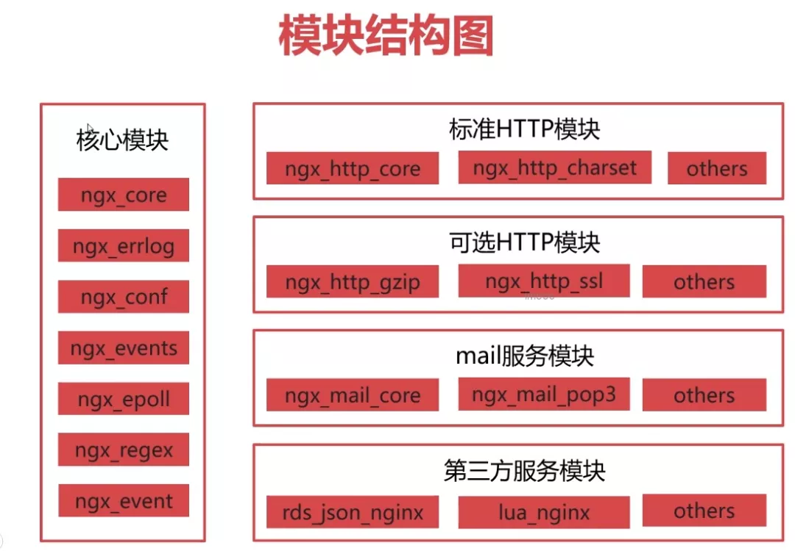
总结
相信通过本文的学习，你应该会对 Nginx 有一个更加全面的认识。